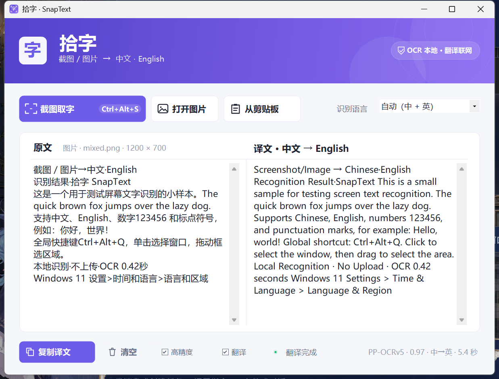

拾字 · SnapText
Windows 本地截图 / 图片中英文 OCR · PP-OCRv5 高精度模式

功能
- 全局快捷键
Ctrl+Alt+S截图取字 - 拖动框选，或单击选择整个窗口
- 按住
Shift连续框选多个区域，按框选顺序识别 - PP-OCRv5 本地高精度中英文识别，也可切换 Windows OCR 快速模式
- 自动中英翻译：左侧原文、右侧译文，方向根据内容自动判断
- 支持打开图片、拖入图片、读取剪贴板图片
- 识别结果可编辑、复制；关闭窗口后驻留托盘
隐私
OCR、截图和图片全部在本地处理，不上传任何服务器。翻译模式默认关闭；开启后仅识别出的文字会发送到 MyMemory，图片不会上传。详见 隐私政策。
环境
- Windows 10 2004+ 或 Windows 11（x64）
- Release 包为自包含版本，无需单独安装 .NET
- 高精度模型随包分发，可完全离线使用